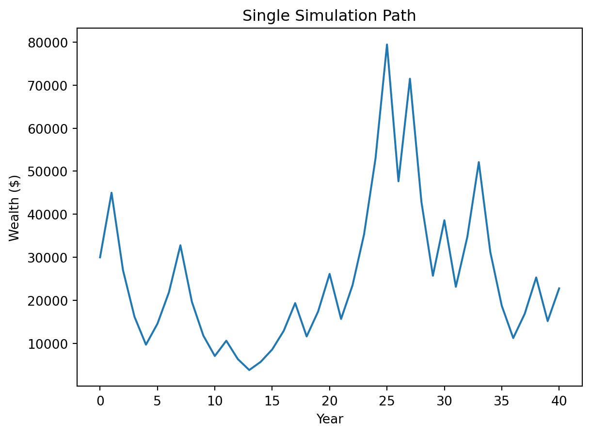
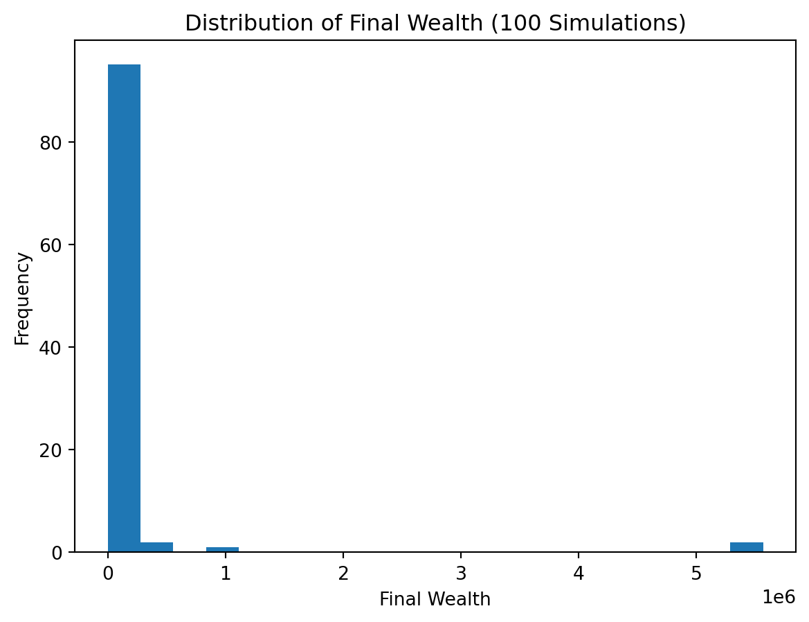

31500.0The Investment Game: Should You Buy In?
Introduction
I was given the option to invest $30,000 in a game where each year a fair coin determines returns. If it lands heads, the balance increases by 50%. If it lands tails, the balance drops by 40%. This repeats every year until age 75.
At first, this sounds like a decent gamble—especially with such a large upside. But after working through the numbers and simulations, my goal here is to figure out whether this is actually a smart decision or just looks good on paper.
1) Expected Value After One Flip
After one flip:
- Heads (50%): $30,000 → $45,000
- Tails (50%): $30,000 → $18,000
The expected value after one flip is r round(ev, 0) dollars, which is about a 5% increase over the initial $30,000.
At first glance, this seems like a good deal since the average outcome is higher than what I started with. But this feels a bit misleading to me because this only looks at a single flip. In reality, the game repeats many times, and the compounding effect of losses might matter more than this one-step gain.
2) Single Simulation Over Time
[30000,
45000.0,
27000.0,
16200.0,
9720.0,
14580.0,
21870.0,
32805.0,
19683.0,
11809.8,
7085.879999999999,
10628.82,
6377.2919999999995,
3826.3751999999995,
5739.5628,
8609.3442,
12914.0163,
19371.024449999997,
11622.614669999997,
17433.922004999997,
26150.883007499993,
15690.529804499994,
23535.79470674999,
35303.69206012499,
52955.53809018748,
79433.30713528123,
47659.984281168734,
71489.9764217531,
42893.98585305186,
25736.391511831116,
38604.587267746676,
23162.752360648006,
34744.12854097201,
52116.19281145801,
31269.715686874802,
18761.82941212488,
11257.097647274928,
16885.64647091239,
25328.469706368585,
15197.08182382115,
22795.622735731726]
What stood out to me here is how unpredictable the path is. Even if the balance goes up for a few years, a couple of bad outcomes can quickly wipe out those gains. The drops feel much more damaging than the gains feel helpful because they shrink the base you’re growing from.
Personally, I wouldn’t feel great watching my investment follow a path like this—it’s just too volatile.
3) 100 Simulations: Distribution of Final Balances
(np.float64(150474.42223992306),
np.float64(3647.299637717077),
np.float64(0.25))
The mean final wealth is r round(mean_val, 0), while the median is r round(median_val, 0). The probability of ending above $30,000 is r round(prob_profit, 3).
One thing I noticed is the big gap between the mean and the median. That tells me a few extremely large outcomes are pulling the average up. Most of the time, the results are actually much lower than the mean suggests.
So even though the “average” looks good, the typical experience doesn’t.
4) Probability Final Balance > $30,000
np.float64(0.25)The probability of finishing above $30,000 is r round(prob_profit, 3).
This is the part that really changed my perspective. Even though the expected value is positive, the chance of actually making money is not that high. In other words, you’re more likely to lose money than gain it, even though the math says the game is favorable on average.
That feels like an important distinction for a real investment decision.
5) Modified Strategy (Bet 25% Each Round)
(np.float64(49403.4084434087), np.float64(38461.11695125756), np.float64(0.72))The mean becomes r round(mean_frac, 0), the median is r round(median_frac, 0), and the probability of profit is r round(prob_frac, 3).
This version feels much more stable. The growth is slower, but the risk of completely crashing is much lower. I’d rather have a more consistent outcome than rely on a few lucky runs to make the numbers look good.
6) The Kelly Criterion
The Kelly Criterion gives a guideline for how much of your wealth to bet in situations like this.
0.09999999999999998The optimal fraction is r round(kelly, 3), which is very close to 0.25.
This was interesting to me because it lines up almost exactly with the 25% strategy tested earlier. That makes the modified strategy feel less arbitrary and more grounded in theory.
Final Recommendation
Even though the game has a positive expected value, I wouldn’t recommend investing the full $30,000 under the original rules. The risk of ending up below the starting amount is just too high, and the outcomes are extremely volatile.
If I had to participate, I would only do it using a fractional betting strategy like the 25% approach. It reduces the downside risk and aligns with the Kelly Criterion, which makes it feel like a more balanced and realistic strategy.
Overall, this exercise showed me that a positive expected value doesn’t automatically mean a good investment—especially when compounding and risk are involved.